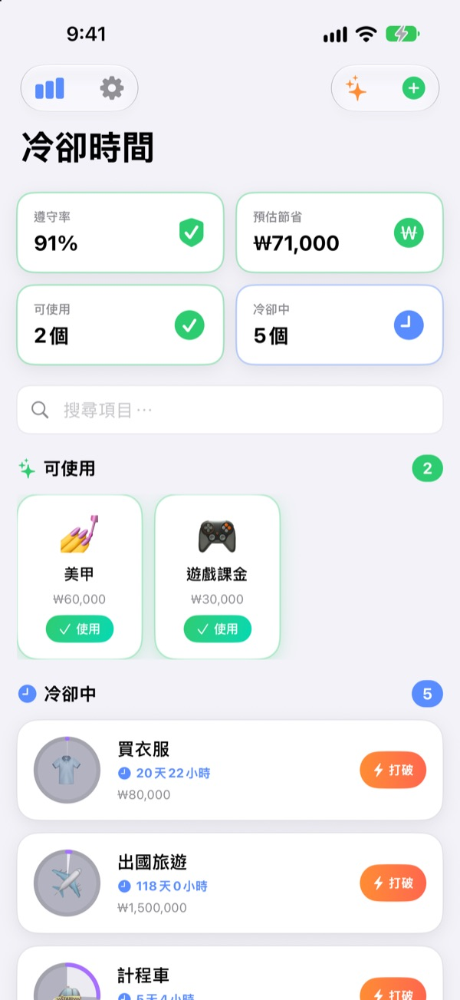
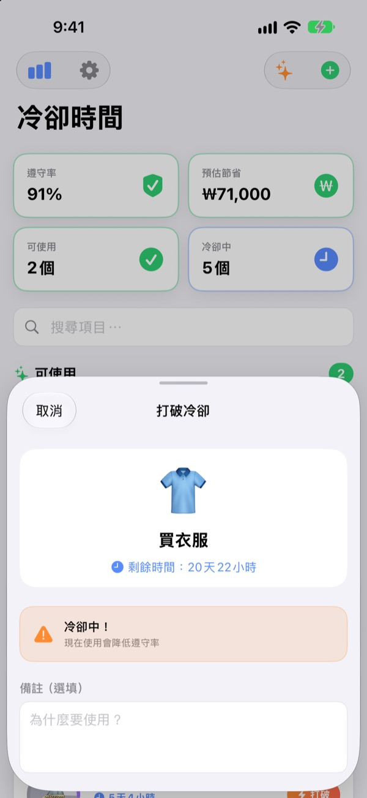
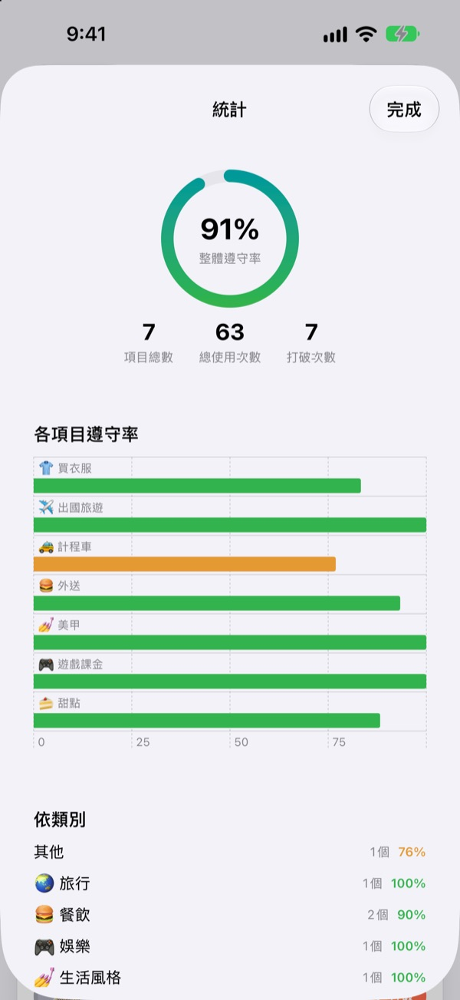
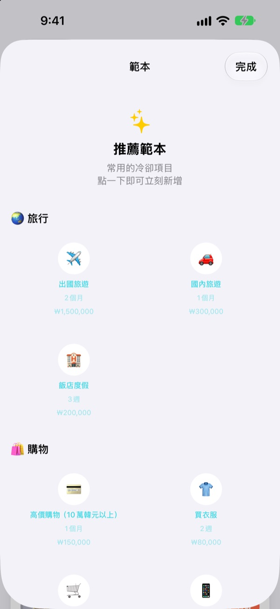

在這裡試試看
選一個項目，點一下「使用」，然後一天一天往後推。也可以看看在冷卻中使用會怎樣。
「就這一次」，一週說了四次？
每次打開外送平台，都覺得好久沒點了，可是上一次到底是什麼時候，其實記不太清楚。冷卻時間會顯示你上次使用的時間和下次可以使用的時間，讓你依照事先訂好的規則決定要不要忍，而不是看當下的心情。
打破之前，再想一下
在冷卻中想使用時，會顯示剩餘時間，並提醒你遵守率會下降。
如果還是要用，可以寫下原因和實際花費。打破的紀錄也會如實保留。

忍住多少，數字會說話
遵守率、依項目與依類別的紀錄、打破次數，一個畫面全部看得到。
為項目填上預估花費，還能估算這個月省下了多少錢。

常用的冷卻，點一下就加
從旅行、購物、餐飲到健康、理財，在推薦範本裡挑一個就能直接新增。
冷卻過半和結束時都會通知你，主畫面與鎖定畫面的小工具也能隨時查看剩餘時間。

三個步驟就能開始
- 1
新增項目
設定名稱、表情符號和等待時間（小時、天、週、個月），或直接從推薦範本裡挑。
- 2
用的時候點「使用」
冷卻從那一刻開始，圓環隨即清空。
- 3
收到通知，就能再用
冷卻結束時會通知你。第一次記得允許通知就好。
推薦範本裡的冷卻
- 🌏 旅行
- 出國旅遊、國內旅遊、飯店度假
- 🛍️ 購物
- 買衣服、衝動購物、3C 產品
- 🍔 餐飲
- 速食、外送、咖啡廳、甜點、外食、宵夜
- 🎮 娛樂
- 遊戲課金、電影院、追劇、演唱會／演出
- 💅 生活風格
- 喝酒、計程車、美甲、美髮沙龍、按摩／SPA
- 🏃 健康
- 休息日（不運動）、欺騙日
- 💰 理財
- 股票交易、樂透
每個範本都預先設好了合適的週期和預估花費。沒有想要的？自己建立一個就行。
常見問題
在冷卻中用掉了怎麼辦？
沒關係。使用紀錄裡會標示這次是在冷卻中使用的，冷卻也會從那一刻重新開始。這會反映在統計的遵守率和打破次數上。
省下的錢是怎麼算的？
為項目填上預估花費後，應用程式會估算這個月因為冷卻少用了幾次，並顯示對應的金額。這是估算值，不是精確金額；沒有填寫預估花費的項目不會列入計算。
收不到通知。
請到 iPhone 的「設定 > 通知 > 冷卻時間」確認通知已開啟。如果應用程式首頁顯示通知已關閉，點那裡的設定按鈕就能直接前往。
要怎麼加入小工具？
長按主畫面，點左上角的＋，找到冷卻時間並加入。鎖定畫面也有小工具，會顯示現在可以使用的項目和剩餘時間。
要怎麼刪除紀錄？
刪除項目時，它的紀錄也會一起刪除；刪除應用程式則會清除所有紀錄。紀錄只存在裝置上，刪除後就無法復原。
可以和其他裝置同步嗎？
目前還不行。紀錄只存在你正在用的這支 iPhone 上。跨裝置同步和備份已列在應用程式的「設定 > 即將推出的功能」裡。
真的免費嗎？
是的。沒有任何要付費才能解鎖的功能。喜歡的話可以在設定裡給開發者一點小費，不給也不會有任何差別。
我的紀錄會被傳到別的地方嗎？
不會。沒有帳號，也沒有廣告，冷卻與使用紀錄只儲存在你的 iPhone 裡。開發者收到的只有匿名使用統計、錯誤回報，以及你主動送出的意見回饋。詳情請見下方的隱私權政策。
發現問題，或想要某個功能。
歡迎透過應用程式裡的「設定 > 支援 > 發送意見回饋」、Instagram 私訊 @lee25_ios，或下方的電子郵件告訴我們。如果某個畫面卡住了，請一併寫下當時在做什麼以及 iOS 版本，這樣能更快找到原因。
有問題或建議，歡迎寄信至 leeo@kakao.com。